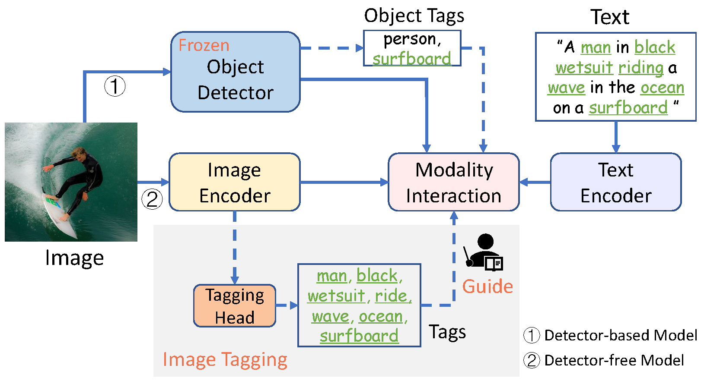
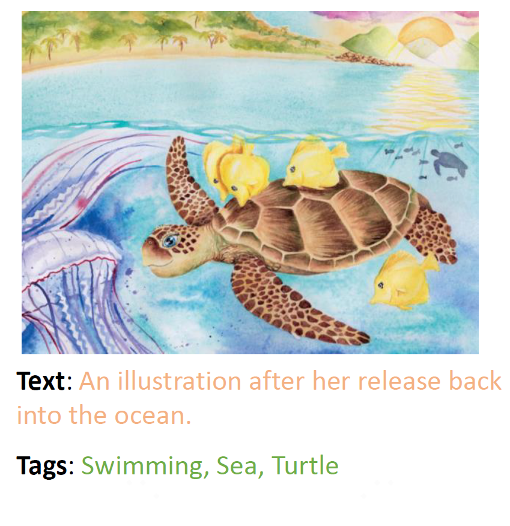
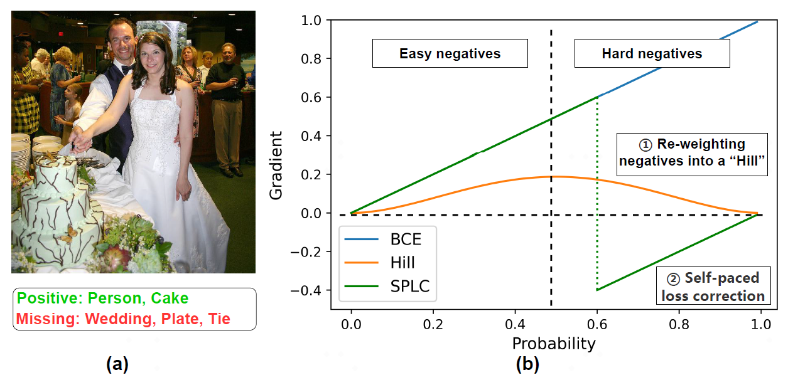
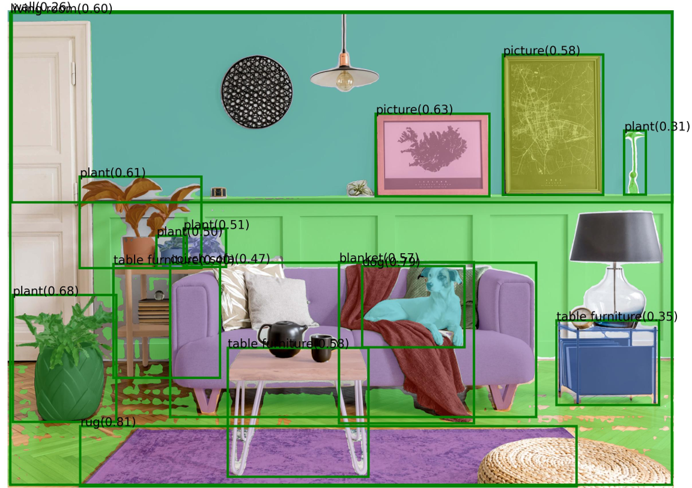

|
Research(* indicates equal contribution)
|
|

|
Tag2Text: Guiding Vision-Language Model via Image Tagging
Xinyu Huang,
Youcai Zhang,
Jinyu Ma,
Weiwei Tian,
Rui Feng,
Yuejie Zhang,
Yaqian Li,
Yandong Guo,
Lei Zhang
Tech report,
2023
project page
/
arXiv
/
demo
/
code
Tag2Text achieves superior image tag recognition ability of 3,429 commonly human-used categories. By leveraging tagging guidance, Tag2Text effectively enhances the performance of vision-language models on both generation-based and alignment-based tasks.
|
|

|
IDEA: Increasing Text Diversity via Online Multi-Label Recognition for Vision-Language Pre-training
Xinyu Huang,
Youcai Zhang,
Ying Cheng,
Weiwei Tian,
Ruiwei Zhao,
Rui Feng,
Yuejie Zhang,
Yaqian Li,
Yandong Guo,
Xiaobo Zhang
ACM MM,
2022
arXiv
/
code
We propose IDEA to provide more explicit textual supervision (including multiple valuable tags and texts composed by multiple tags) for visual models.
|
|

|
Simple and Robust Loss Design for Multi-Label Learning with Missing Labels
Youcai Zhang*,
Yuhao Cheng*,
Xinyu Huang*,
Fei Wen,
Rui Feng,
Yaqian Li,
Yandong Guo
Tech report,
2021
arXiv
/
code
Multi-label learning in the presence of missing labels(MLML) is a challenging problem. We propose two simple yet effective methods via robust loss design based on an observation.
|
|

|
Tag2Text & Grounded-SAM
project contributed by Xinyu Huang
7K+ stars!
Tag2Text marry Grounded-SAM, which can automatically recognize, detect, and segment for an image! Tag2Text showcases powerful image recognition capabilities!
|
|
{kind=link}